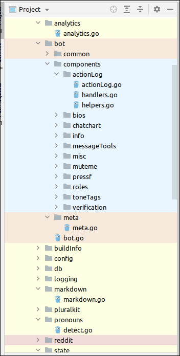

Back to index
Date: 2021-06-24
Category: jetbrains
JetBrains IDEs come with the functionality to group code into so-called scopes. This allows for filtering of source code files and easier navigation.
Scopes can be created by going to Settings > Appearance & Behaviour > Scopes, Scopes can be configured based on directories. Once scopes are confiugred, colours can be attached to them from the File Colors tab.
